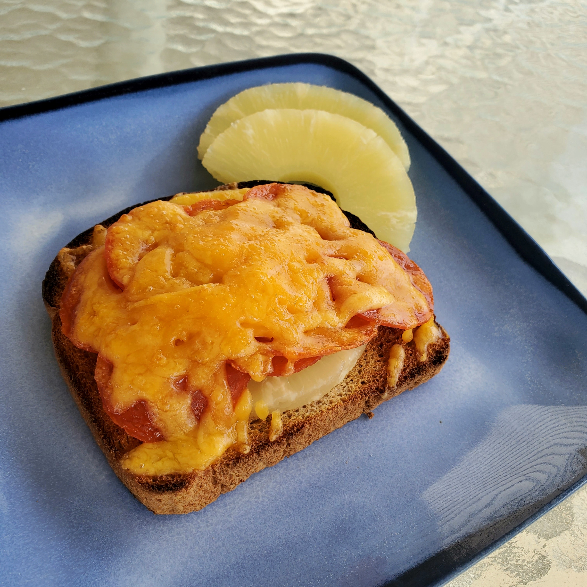

Hawaiian Sandwich

Description
An unusual layered brunch sandwich, old family weekend favorite. A delicious flavor combination of bacon, cheese and pineapple. You'll see why they call Hawaii the Sandwich Islands!
Ingredients
- 16 slices bacon
- 8 slices toasted bread
- 1 can sliced pineapple, drained
- 8 slices cheddar cheese
Steps
- Place bacon in a large, deep skillet. Cook over medium high heat until evenly brown. Drain and set aside.
- Place 8 slices of toast on a baking sheet. Place a slice of pineapple, two slices of bacon and a slice of cheese on each. Broil until cheese is melted. Serve hot.